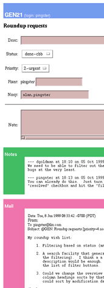

|
|
|
|||
|
Copyright (c) 2000 Ka-Ping Yee. This material may
be distributed only subject to the terms and conditions set forth in
the Software Carpentry Open Publication License, which is available at:
|
||||
We propose an issue-tracking system called Roundup, which will manage a number of issues (with properties such as "description", "priority", and so on) and provide the ability to (a) submit new issues, (b) find and edit existing issues, and (c) discuss issues with other participants. The system will facilitate communication among the participants by managing discussions and notifying interested parties when issues are edited.
This design draws on experience from an existing implementation which we will refer to as "the Roundup prototype". The graphical interface we have in mind will resemble the main display of the prototype.
A typical software project requires the management of many tasks, usually distributed among several collaborators. In fact, any project team could use a tool for sorting out and discussing all the relevant issues. A common approach is to set up some kind of "to-do" list that people can share.
However, to address the overall problem we need much more than just a shared to-do list; we need to manage a growing body of knowledge and experience to help a team collaborate effectively on a project. The issue-tracking tool becomes a nexus for communication: the Grand Central Station of the group intelligence.
The primary focus of this design is to help developers work together well, not to provide a customer service interface to the developers. This is not to say that the design is to be made unsuitable for customers to use. Rather, it is assumed that many of the same qualities that are good for supporting development (see below) are also good for non-developers using the system. Additional niceties for providing a safe or simplified interface to clients are intentionally deferred for later consideration.
A good issue-tracking system should have at least the following properties:
|
Simplicity. It is a strong requirement that the tool be accessible and understandable. It should be fairly obvious what different parts of the interface do, and the inner mechanisms should operate in ways that most users can easily predict.
Efficiency. We aim to optimize for minimum effort to do the most common operations, and best use of resources like screen real estate to maximize the amount of information that we summarize and present.
Generality. We try to avoid making unnecessary assumptions that would restrict the applicability of the tool. For example, there is no reason why one might not also want to use this tool to manage a design process, non-software projects, or organizational decisions.
Persistence. We prefer hiding or reclassifying information to deleting it. This helps support the collection of statistics later. If records are never destroyed, there is little danger in providing access to a larger community, and logging yields accountability, which may encourage better behaviour.
|
Roundup stores a number of items, each of which can have several properties and an associated discussion. The properties can be used to classify or search for items. The discussion is a sequence of e-mail messages. Each item is identified by a unique number, and has an activity log which records the time and content of edits made on its properties. The log stays fairly small since the design intentionally provides only small data types as item properties, and encourages anything large to be attached to e-mail where it becomes part of the discussion. The next section explains how items are organized.
|
Some systems try to alleviate this problem by allowing nodes to appear at multiple locations in a tree, as with "aliases" or "symbolic links" in a filesystem, for example. This does help somewhat, but we want to be even more flexible by allowing the organization of nodes into sets that may freely intersect. Rather than putting each node at exactly one place in an overall "grand scheme", a node can belong to as many sets as are appropriate. If we choose to represent the sets themselves as nodes and set membership as a link between nodes, we're now ready to present the definition of a hyperdatabase.
|
There are several reasons for building our own kind of database for Roundup rather than using an existing one. Requiring the installation of a full-blown third-party SQL database system would probably deter many potential users from attempting to set up Roundup; yet a real relational database would be too complicated to implement on our own. On the other hand, a hyperdatabase can be implemented fairly easily using one of the Python DBM modules, so we can take the "batteries-included" approach and provide it as part of the system. It's easier to build and understand than a true relational database (in accordance with our guiding principle of simplicity), but provides most of the query functionality we want.
A hyperdatabase is well suited for finding the intersection of a number of sets in which items belong. We expect that most of the queries people want to do will be of this form, rather than complicated SQL queries. For example, a typical request might be "show me all critical items related to security". The ability to store arbitrary key-value pairs and links on nodes gives it more flexibility than an RDBMS. Users are not going to be making thousands of queries per second, so it makes sense to optimize for simplicity and flexibility rather than performance.

For our application, we store each item as a node in a hyperdatabase. The item's properties are stored as key-value pairs on its node. Four types of properties are allowed: string, date, choice, and reference.
The string type is for short, free-form strings. String properties are not intended to contain large amounts of text, and it is recommended that they be presented as one-line fields to encourage brevity.
The date type is for calendar dates and times.
The choice type denotes a single selection from a number of options. A choice property entails a link from the node possessing the property to the node representing the chosen option.
The reference type is for a list of links to any number of other nodes in the in the database. A reference property, for example, can be used to refer to related items or topic categories relevant to an item.
For Roundup, all items have five properties that are not customizable:
The description property is a short one-line description of the item. The detailed description can go in the first e-mail message of the item's discussion spool.
The superseder property is used to support the splitting, joining, or replacing of items. When several items need to be joined into a single item, all the old items link to the new item in their superseder property. When an item needs to be split apart, the item references all the new items in its superseder propety. We can easily list all active items just by checking for an empty superseder property, and trace the path of an item's origins by querying the hyperdatabase for links.
The nosy property contains a list of the people who are interested in an item. This mechanism is explained in the section on Nosy Lists.
The creation property records the item's creation time. The activity property records the last time that the item was edited or a mail message was added to its discussion spool. These two properties are managed by Roundup and are not available to be edited like other properties.
Users of the system are also represented by nodes in the hyperdatabase, containing properties like the user's e-mail address, login name, and password.
|
It is hoped that the hyperdatabase together with the specializations mentioned above for Roundup will be applicable in a variety of situations (in accordance with our guiding principle of generality).
To address the problem at hand, we need
a specific schema for items applied particularly to software development.
Again, we are trying to keep the schema simple: too many
options make it tougher for someone to make a good choice.
The schema is written here in the same form that it would
appear in a configuration file.
fixer = Reference() # people who will fix the problem
topic = Reference() # relevant topic keywords
priority = Choice("critical", # panic: work is stopped!
"urgent", # important, but not deadly
"bug", # lost work or incorrect results
"feature", # want missing functionality
"wish") # avoidable bugs, missing conveniences
status = Choice("unread", # submitted but no action yet
"deferred", # intentionally set aside
"chatting", # under review or seeking clarification
"need-eg", # need a reproducible example of a bug
"in-progress", # understood; development in progress
"testing", # we think it's done; others, please test
"done-cbb", # okay for now, but could be better
"resolved") # fix has been released
The fixer property assigns responsibility for an item to a person or a list of people. The topic property places the item in an arbitrary number of relevant topic sets (see the section on Browsing and Searching).
As previously mentioned, each item gets an activity log. Whenever a property on an item is changed, the log records the time of the change, the user making the change, and the old and new values of the property. This permits the later gathering of statistics (for example, the average time from submission to resolution).
We do not specify or enforce a state transition graph, since making the system rigid in that fashion is probably more trouble than it's worth. Experience has shown that there are probably two convenient automatic state transitions:
Roundup provides its services through two main interfaces: e-mail and the Web. This division is chosen to optimize the most common tasks.
E-mail is best suited for the submission of new items since most people are most comfortable with composing long messages in their own favourite e-mail client. E-mail also permits them to mention URLs or attach files relevant to their submission. Indeed, in many cases people are already used to making requests by sending e-mail to a mailing list of people; they can do exactly the same thing to use Roundup without even thinking about it. Similarly, people are already familiar with holding discussions in e-mail, and plenty of valuable usage conventions and software tools already exist for that medium.
The Web, on the other hand, is best suited for summarizing and seeking information, because it can present an interactive overview of items. Since the Web has forms, it's also the best place to edit items.
|
The system needs an address for receiving mail and an address that forwards mail to all participants. Each item has its own list of interested parties, known as its nosy list. Here's how nosy lists work:
The effect is like each item having its own little mailing list, except that no one ever has to worry about subscribing to anything. Indicating interest in an issue is sufficient, and if you want to bring someone new into the conversation, all you need to do is Cc: a message to them. It turns out that no one ever has to worry about unsubscribing, either: the nosy lists are so specific in scope that the conversation tends to die down by itself when the issue is resolved or people no longer find it sufficiently important.
Each nosy list is like an asynchronous chat room, lasting only a short time (typically five or ten messages) and involving a small group of people. However, that group is the right group of people: only those who express interest in an item in some way ever end up on the list, so no one gets spammed with mail they don't care about, and no one who wants to see mail about a particular item needs to be left out, for they can easily join in, and just as easily look at the mail spool on an item to catch up on any messages they might have missed.
We can take this a step further and permit users to monitor particular topics or classifications of items by allowing other kinds of nodes to also have their own nosy lists. For example, a manager could be on the nosy list of the priority value node for "critical", or a developer could be on the nosy list of the topic value node for "security". The recipients are then determined by the union of the nosy lists on the item and all the nodes it links to.
Using many small, specific mailing lists results in much more effective communication than one big list. Taking away the effort of subscribing and unsubscribing gives these lists the "feel" of being cheap and disposable. The transparent capture of the mail spool attached to each issue also yields a nice knowledge repository over time.
 Since Roundup is intended to support arbitrary user-defined schema for item properties, the editing interface must be automatically generated from the schema. The configuration for Roundup will include a template describing how to lay out the properties to present a UI for inspecting and editing items. For example:
<table width="100%">
<tr><td align=right>Description:</td>
<td><?property description size=70></td></tr>
<tr><td align=right>Status:</td>
<td><?property status></td></tr>
</table>
To display the editing form for an item, Roundup substitutes an HTML form widget for each <?property ...> tag, and transfers attributes (such as size=70 in the above example) from the processing tag to the form widget's tag. Each type has its own appropriate editing widget:
We foresee the use of custom date fields for things like deadlines, so input fields for date properties should support some simple way of specifying relative dates (such as "three weeks from now").
The superseder property is a special case: although it is more efficient to store a superseder property in the superseded item, it makes more sense to provide a "supersedes" edit field on the superseding item. So we need a special widget on items for this purpose (perhaps something as simple as a text field containing a comma-separated list of item numbers will do). Links in the superseder property should appear on both the superseding and superseded items to facilitate navigating an item's pedigree.
After the editing widgets, the item inspection page shows a "note" text box and then a display of the messages in the discussion spool, like the Roundup prototype. This field lets you enter a note explaining your change when you edit the item, and the note is included in the notification message that goes out to tell the interested parties on the nosy list of your edits.
The ideal we would like to achieve is to make searching as much like browsing as possible: the user simply clicks about on things that seem interesting, and the information narrows down comfortably until the goal is in sight. This is preferable to trying to digest a screen filled with widgets and buttons or entering a search expression in some arcane algebraic syntax.
|
The browsing interface presents filtering functionality for each of the properties in the schema. As with editing, the interface is generated from a template describing how to lay out the properties. Each type of property has its own appropriate filtering widget:
For a reference property like topic, one possibility is to show, as hyperlinks, the keywords whose sets have non-empty intersections with the currently displayed set of items. Sorting the keywords by popularity seems reasonable. Clicking on a keyword then narrows both the list of items and the list of keywords. This gives some of the feel of walking around a directory tree -- but without the restriction of having to select keywords in a particular hierarchical order, and without the need to travel all the way to the leaves of the tree before any items are visible.
Below the filtering form is a listing of items, with their properties displayed in a table. Rows in the table can also be generated from a template, as with the editing interface. This listing is the central overview of the system, and it should aim to maximize the density of useful information in accordance with our guiding principle of efficiency. For example, Bugzilla initially displays seven or eight items of the index, but only after the user has waded through three bewildering screens of form widgets. Jitterbug can't even fit any items at all in the first screenful, as it's taken up by artwork and adminstrative debris. In contrast, in the Roundup prototype, 25 high-priority issues are immediately visible, with most of the screen space devoted to their descriptions. Colour indicates the status of each item to help the eye sift through the index quickly.
In both Jitterbug and Bugzilla, items are sorted by default by ID, a meaningless field. Sorting by ID puts the issues in order by ascending submission date, which banishes recent issues far away at the bottom of the list. The Roundup prototype sorts items in sections by priority, and then within sections by the date of last activity. This reveals at a glance where discussion is most active, and provides an easy way for anyone to move an issue up in the list.
The page produced by a given set of browsing options constitutes a view. The options should all be part of the query parameters in the URL so that views may be bookmarked. A view specifies:
On each sort key there is the option to use sections -- that is, instead of making the property's value a column of the table, each possible value for the property is displayed at the top of a section and all the items having that value for that property are grouped underneath. This avoids wasting screen space with redundant information.
We propose that our default view should be:
The starting URL for Roundup should immediately present the listing of items generated by this default view, with no preceding query screen.
The hyperdatabase is clearly a separable component which can be developed and tested independently to an API specification.
As soon as the API to the hyperdatabase is nailed down, the implementation of the Roundup database layer on top of the hyperdatabase can begin. (This refers to the data types and five fixed properties specific to Roundup.) This layer can also be tested separately.
When the interface to the Roundup hyperdatabase is ready, development can begin on the user interface. The mail handler and the Web interface can be developed in parallel and mostly independently of each other.
The mail handler can be set up for testing fairly easily: mail messages on its standard input can be synthesized; its output is outgoing mail, which can be captured by replacing the implementation of the "send mail" function; and its side effects appear in the hyperdatabase, which has a Python API.
The Web interface is not easily testable in its entirety, though the most important components of it can be unit tested, such as the component that translates a view specification into a list of items for display, and the component that performs replacements on templates to produce an editing or filtering interface.
The description of the hyperdatabase above avoids some issues regarding node typing that need to be better specified. It is conceivable that eventually Roundup could support multiple kinds of items with their own schemas.
To permit integration with external tools, it is probably a good idea to provide a command-line tool that exposes the hyperdatabase API. This tool will be left for a later phase of development and so isn't specified in detail here.
Generating the user interface from a template is like applying an XSL stylesheet to XML, and if there's a standard Python module for performing these transformations, we could use XML instead.
More thinking is needed to determine the best filtering interface for reference properties. The proposed interface works well for topic keywords, but it isn't clear what to do when there are too many keywords to display them all.
There has been a variety of reactions to the hyperdatabase from reviewers: some like it, some are neutral, and some would prefer a "standard" RDBMS solution. For those in the latter camp, note that it's still possible to build the Roundup database layer around an RDBMS if we really need to. The rest of the design, in particular the "nosy list" mechanism, remains intact.
The possibility of malice by registered users has been disregarded. The system is intended to be used by a co-operative group.
This design tries to address as many as possible of the suggested requirements mentioned on the contest page:
Roundup is an issue-tracking system that also functions as a communications center and a knowledge repository. It combines the strengths of e-mail and the Web to try to provide the best possible user interaction.
The use of a "hyperdatabase" as the core model for the knowledge repository gives us the flexibility to extend Roundup and apply it to a variety of domains by providing new item schemas and user-interface templates.
Roundup is self-contained and easy to set up, requiring only a webserver and a mailbox. No one needs to be root to configure the webserver or to install database software.
This design is based on an existing deployed prototype which has proven its strengths and revealed its weaknesses in heavy day-to-day use by a real development team.
My thanks are due to Christina Heyl, Jesse Vincent, Mark Miller, Christopher Simons, Jeff Dunmall, Wayne Gramlich, and Dean Tribble for reviewing this paper and contributing their suggestions.
| [Home] | [FAQ] | [License] | [Rules] | [Resources] | [Archives] |
{kind=link}
{kind=link}
{kind=link}
{kind=link}
{kind=link}
{kind=link}
{kind=link}
{kind=link}